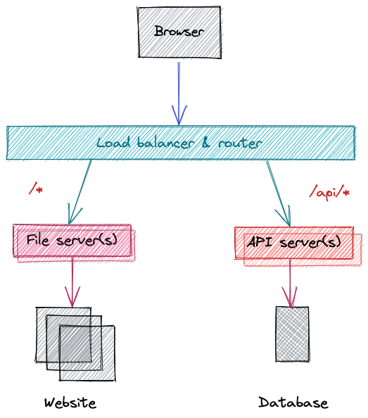

<!DOCTYPE html>


<html lang="en-gb">
  <head>
    <meta charset="utf-8" />
    <meta http-equiv="X-UA-Compatible" content="IE=edge" />
    <title>CYF&#43;</title>
    <meta name="description" content="A free and open source immersive engineering programme. Practical, hands on projects in Go, distributed systems engineering, site reliability engineering, software engineering. Pace, scale, and complexity." />
    <meta name="viewport" content="width=device-width, initial-scale=1" />
    
    <style>
      body,
      html {
        margin: 0;
        padding: 0;
        height: 100%;
        animation: fade-in 0.2s;
      }
      @keyframes fade-in {
        0% {
          opacity: 0;
        }
        100% {
          opacity: 1;
        }
      }
    </style>
     
    <link
      rel="stylesheet"
      href="/bundled.min.f44ec27dd539fe9647de9751483e4bcd.css"
      media="print"
      onload="this.media='all'"
    />
    <noscript>
      <link rel="stylesheet" href="/bundled.min.f44ec27dd539fe9647de9751483e4bcd.css" />
    </noscript>
    <link rel="preconnect" href="https://fonts.googleapis.com" />
    <link rel="preconnect" href="https://fonts.gstatic.com" crossorigin />
    <link
      href="https://fonts.googleapis.com/css2?family=Hanken+Grotesk:wght@300;400;700&family=Major+Mono+Display&display=swap"
      rel="stylesheet"
      media="print"
      onload="this.media='all'"
    />

    <link
      rel="apple-touch-icon"
      sizes="180x180"
      href="/favicons/apple-touch-icon.png"
    />
    <link
      rel="icon"
      type="image/png"
      sizes="32x32"
      href="/favicons/favicon-32x32.png"
    />
    <link
      rel="icon"
      type="image/png"
      sizes="16x16"
      href="/favicons/favicon-16x16.png"
    />
    <link rel="manifest" href="/favicons/site.webmanifest" />
    <link rel="shortcut icon" href="/favicons/favicon.ico" />
    <meta name="apple-mobile-web-app-title" content="CYF+" />
    <meta name="application-name" content="CYF+" />
    <meta name="msapplication-TileColor" content="#9f00a7" />
    <meta
      name="msapplication-config"
      content="/favicons/browserconfig.xml"
    />
    <meta name="theme-color" content="#00ff90" />
  </head>
</html>
<body class="is-light-mode">
  <a class="c-skip-link e-button" id="skip-link" href="#main">Skip to main</a>
  <div class="l-layout">
    <header class="l-layout__header l-header">
  <div class="l-header__nav">
    <h1 class="l-header__heading">
      <a class="l-header__home" href="/">CYF&#43;</a>
    </h1>

    <button
      class="l-header__action e-button e-button--icon js-menu-toggle is-fixed"
    >
      <svg
        xmlns="http://www.w3.org/2000/svg"
        fill="none"
        viewBox="0 0 24 24"
        stroke-width="1.5"
        stroke="currentColor"
        class="e-button__icon l-header__icon"
      >
        <path
          stroke-linecap="round"
          stroke-linejoin="round"
          d="M12 6.75a.75.75 0 110-1.5.75.75 0 010 1.5zM12 12.75a.75.75 0 110-1.5.75.75 0 010 1.5zM12 18.75a.75.75 0 110-1.5.75.75 0 010 1.5z"
        />
      </svg>

      <span class="is-invisible">Open Menu.</span>
    </button>
  </div>
</header>
 <nav
  class="l-layout__menu l-menu"
  aria-label="Main Site Links."
  id="site-menu"
  hidden
  tabindex="0"
>
  <div class="l-menu__container">
    <h2 class="l-menu__heading e-heading__2">
      <a href="/" class="l-menu__home">CYF&#43;</a>
    </h2>
    <button
      class="l-menu__action e-button e-button--icon js-menu-toggle"
      id="close-menu"
    >
      <svg
        xmlns="http://www.w3.org/2000/svg"
        fill="none"
        viewBox="0 0 24 24"
        stroke-width="1.5"
        stroke="currentColor"
        class="e-button__icon"
      >
        <path
          stroke-linecap="round"
          stroke-linejoin="round"
          d="M6 18L18 6M6 6l12 12"
        />
      </svg>

      <span class="is-invisible">Close Menu.</span>
    </button>
    <ul class="l-menu__primary e-list">
      <li class="l-menu__item e-list__item">
        <a class="l-menu__link e-link e-heading__1" href="/about">About</a>
      </li>
      <li class="l-menu__item e-list__item">
        <a class="l-menu__link e-link e-heading__1" href="/versions"
          >Versions</a
        >
      </li>
      <li class="l-menu__item e-list__item">
        <a class="l-menu__link e-link e-heading__1" href="/projects"
          >Projects</a
        >
      </li>
      <li class="l-menu__item e-list__item">
        <a class="l-menu__link e-link e-heading__1" href="/primers">Primers</a>
      </li>
    </ul>

    <div class="l-menu__secondary">
      
      <a class="l-menu__link e-link" href="#skip-link">
        <span class="is-invisible">To top</span>
        <svg
          xmlns="http://www.w3.org/2000/svg"
          fill="none"
          width="48px"
          viewBox="0 0 24 24"
          stroke-width="1.5"
          stroke="currentColor"
          class="l-menu__icon"
        >
          <path
            stroke-linecap="round"
            stroke-linejoin="round"
            d="M3 4.5h14.25M3 9h9.75M3 13.5h5.25m5.25-.75L17.25 9m0 0L21 12.75M17.25 9v12"
          />
        </svg>
      </a>
      
    </div>
  </div>

  
</nav>

    <main id="main" class="l-layout__main l-main" tabindex="0">
      

<article>
  <header class="l-page__header c-page-header">
    <div class="c-page-header__container">
      <div class="c-page-header__breadcrumbs">
        
<nav class="c-breadcrumbs">
  <ol class="c-breadcrumbs__list">
    <li class="c-breadcrumbs__item">
      <a class="c-breadcrumbs__link" href="/projects/">Projects</a>
    </li>
  </ol>
</nav>


      </div>
      <h1
        class="c-page-header__title e-heading__1 is-invisible"
      >
        Multiple servers
      </h1>
         
      <a
        class="c-page-header__edit e-heading__5 e-link is-none--lt-container"
        href="https://github.com/CodeYourFuture/immersive-go-course/tree/main/projects/multiple-servers/README.md"
        >Edit on Github</a
      >
       

  

  


<h2 class="c-lastmod c-page-header__lastmod">
  .Lastmod
  <a href="https://github.com/CodeYourFuture/immersive-go-course/tree/main/multiple-servers">
    <time datetime="2023-01-08T15:59:51Z">2023-01-08T15:59:51Z</time>
  </a>
</h2>

  
      <section class="c-page-header__toc c-toc" id="toc">
        <nav id="TableOfContents">
  <ol>
    <li><a href="#learning-objectives">Learning objectives:</a></li>
    <li><a href="#project">Project</a>
      <ol>
        <li><a href="#design">Design</a>
          <ol>
            <li><a href="#state">State</a></li>
            <li><a href="#different-workloads">Different workloads</a></li>
          </ol>
        </li>
        <li><a href="#module--packages">Module &amp; packages</a></li>
        <li><a href="#static-server">Static server</a>
          <ol>
            <li>
              <ol>
                <li><a href="#indexhtml"><code>index.html</code></a></li>
                <li><a href="#stylecss"><code>style.css</code></a></li>
                <li><a href="#scriptjs"><code>script.js</code></a></li>
              </ol>
            </li>
            <li><a href="#static-server-cli-tool">Static server CLI tool</a></li>
            <li><a href="#static-server-1">Static server</a></li>
          </ol>
        </li>
        <li><a href="#api-server">API server</a></li>
        <li><a href="#getting-images-from-the-api">Getting images from the API</a></li>
        <li><a href="#load-balancing--routing">Load balancing &amp; routing</a></li>
        <li><a href="#benchmarking">Benchmarking</a></li>
      </ol>
    </li>
  </ol>
</nav>
      </section>
      
    </div>
  </header>

  <section class="l-page__main c-copy"><p>Create file server to serve static HTML files. Create an API server that serves JSON from a database. Run the API and file server as two separate servers. Try to load the website &amp; see CORS issue. Put nginx in front of the file server and the API so they are on a single port and hostname. Learn about how to run services in VMs in the cloud. Replicate this local setup in the cloud on a single VM, with all services running on the same host. Route requests to the service.</p>
<p>Timebox: 5 days</p>
<h2 id="learning-objectives">Learning objectives:</h2>
<ul>
<li>Basic microservices ideas, separating concerns of services</li>
<li>Configure nginx to talk to 2-3 copies of the API server</li>
<li>Some web security ideas (CORS)</li>
<li>Reverse proxy configuration, routing on path</li>
<li>Health checks</li>
</ul>
<p>In future:</p>
<ul>
<li>Running applications in the cloud</li>
<li>Using a cloud-hosted databases</li>
<li>Multi-environment configuration</li>
</ul>
<h2 id="project">Project</h2>
<h3 id="design">Design</h3>
<p>In this project, we&rsquo;ll build something with the following architecture.</p>
<p></p>
<p>We&rsquo;ll make the file and API server, and use open source software called <a href="https://nginx.org/">nginx</a> as the load balancer and router.</p>
<p>You can follow the arrows to visualise the path the <em>request</em> takes: an arrow from one box to another is getting data. The <em>response</em> path is the arrow reversed.</p>
<p>You will find the words &ldquo;upstream&rdquo; and &ldquo;downstream&rdquo; used too. Unfortunately this can be confusing because it depends if you are thinking about the request or response path. In general, upstream and downstream are thought of in terms of dependencies, or from the view of a response. So, the file and API servers are &ldquo;upstream&rdquo; of the load balancer: data <em>flows down the stream</em> from the file server to the load balancer, and then the browser.</p>
<p>Let&rsquo;s follow an example request, to <code>http://localhost:8080/index.html</code>:</p>
<ol>
<li>The browser requests <code>http://localhost:8080/index.html</code></li>
<li>The load balancer is listening on this port and receives the HTTP request</li>
<li>It looks at the path (<code>/index.html</code>) of the request and tried to match it against its configuration</li>
<li>The request path does not match <code>/api/*</code>, which you can read as &ldquo;slash api slash anything&rdquo;. The <code>*</code> is often called a &ldquo;wildcard&rdquo;.</li>
<li>The request <em>does</em> match <code>/*</code> — &ldquo;slash anything&rdquo; — so it <strong>routes</strong> the request to the file server</li>
</ol>
<p>This selection of where to send the request is called routing, and the order we perform the checks matters. <code>/*</code> matches everything, so if we checked that first, we&rsquo;d never send any traffic to our API server. We check in order from the <em>most specific</em> path pattern to the least specific path patterns.</p>
<p>Separating out servers like this is one way real systems are built. Why do we do this? Much of it comes down to <strong>scale</strong>: doing a lot of anything puts strain on computer resources&hellip;</p>
<h4 id="state">State</h4>
<p>Some code is &ldquo;stateful&rdquo; while other code can be &ldquo;stateless&rdquo;. We often separate code that is stateful from code that is stateless and, as much as possible, reduce the number of stateful systems. This is because state introduces the <em>possibility</em> of incorrectness, failure and data loss, particularly working at scale.</p>
<p><strong>Stateless</strong> means there is no stored knowledge relating to past requests; each request can be served independently without depending to another. A file server is likely to be stateless: it can serve any file without knowing what other files have been served in the past to a particular client.</p>
<p>Stateless systems scale easily and simply — you just run more of them!</p>
<p><strong>Stateful</strong> servers store and retrieve information, and requests may depend on each other: for example, a server that handles banking information needs to know how much money is in the account before it can let someone take money out!</p>
<p>This state/stateless split is the common reason for separating a file server from a server that communicates with a database.</p>
<h4 id="different-workloads">Different workloads</h4>
<p>Sometimes we split code into different servers or systems because there are very different demands on the computer hardware. This is called the &ldquo;workload&rdquo; that the code places on the hardware:</p>
<ul>
<li>
<p>A <em>CPU-bound workload</em> means something that is limited by the speed of the CPU. A task that performs many calculations, running a complex algorithm like video encoding or 3D modelling, is likely to be CPU bound.</p>
</li>
<li>
<p><em>I/O-bound workloads</em> is limited by how fast data can be read or written from disk or the network, and place heavy demands on these. A server that loads and processes many small files is likely to be I/O bound.</p>
</li>
<li>
<p><em>Memory-bound workloads</em> place heavy demands on the amount of memory or RAM the computer has. Workloads that have to a lot of data into memory, such a database or cache server, are likely to be memory bound.</p>
</li>
</ul>
<p>Placing dissimilar workloads on the same computer can force us to buy very expensive and specialised hardware, make scaling difficult, and make each independent workload negatively affect the other.</p>
<p>There&rsquo;s a good, short guide to workloads on <a href="https://scaleyourapp.com/a-super-helpful-guide-to-understanding-workload-its-types-in-cloud/">scaleyourapp.com</a> which also looks at workloads in terms of usage patterns.</p>
<h3 id="module--packages">Module &amp; packages</h3>
<p>Our file layout for this project will look like this:</p>
<div class="highlight"><pre tabindex="0" style="color:#f8f8f2;background-color:#272822;-moz-tab-size:4;-o-tab-size:4;tab-size:4;"><code class="language-console" data-lang="console"><span style="display:flex;"><span>api/
</span></span><span style="display:flex;"><span>    api.go
</span></span><span style="display:flex;"><span>assets/
</span></span><span style="display:flex;"><span>    ... website ...
</span></span><span style="display:flex;"><span>cmd/
</span></span><span style="display:flex;"><span>    static-server/
</span></span><span style="display:flex;"><span>        main.go
</span></span><span style="display:flex;"><span>    api-server/
</span></span><span style="display:flex;"><span>        main.go
</span></span><span style="display:flex;"><span>config/
</span></span><span style="display:flex;"><span>    nginx.conf
</span></span><span style="display:flex;"><span>static/
</span></span><span style="display:flex;"><span>    static.go
</span></span><span style="display:flex;"><span>go.mod
</span></span></code></pre></div><p>This is because we&rsquo;re building <em>two</em> servers in the same module: <code>api</code> and <code>static</code>. Each has its own code and functionality.</p>
<p>Each will be similar, but slightly different because one is connecting to a database and the other is serving files.</p>
<p>There will also be command line tools for configuring and starting each server, in the <code>cmd</code> directory:</p>
<ul>
<li><code>go run ./cmd/api-server</code> — start the API server</li>
<li><code>go run ./cmd/static-server</code> — start the static server</li>
</ul>
<p>Specifically, the <code>cmd/</code> files will import functionality from <code>api</code> and <code>static</code> respectively, and run them. This modularity will make the code easier to understand (which is <em>the most important thing</em> for code!). If you need a refesher on modularity in Go, the Go website has <a href="https://go.dev/doc/code">a good guide</a>.</p>
<p>In reality, starting each will look like this:</p>
<div class="highlight"><pre tabindex="0" style="color:#f8f8f2;background-color:#272822;-moz-tab-size:4;-o-tab-size:4;tab-size:4;"><code class="language-console" data-lang="console"><span style="display:flex;"><span># api server
</span></span><span style="display:flex;"><span>$ DATABASE_URL<span style="color:#f92672">=</span><span style="color:#e6db74">&#39;postgres://localhost:5432/go-server-database&#39;</span> go run ./cmd/api-server --port <span style="color:#ae81ff">8081</span>
</span></span><span style="display:flex;"><span><span style="color:#960050;background-color:#1e0010">
</span></span></span><span style="display:flex;"><span><span style="color:#960050;background-color:#1e0010"></span># static server
</span></span><span style="display:flex;"><span>$ go run ./cmd/static-server --path assets --port <span style="color:#ae81ff">8082</span>
</span></span></code></pre></div><blockquote>
<p>💡 See the <a href="../prep/README.md#command-line-examples">prep README.md</a> for an explanation of this command line example.</p>
</blockquote>
<h3 id="static-server">Static server</h3>
<p>Our &ldquo;static&rdquo; server will serve the files for a really simple website. The website will fetch images from our API server and display them as an image gallery.</p>
<p>If you have time or simply want to, you can build this website yourself! However, to get us started, here is something that will work.</p>
<p>Below are three files:</p>
<ul>
<li><code>index.html</code> — the main page of the website</li>
<li><code>style.css</code> — stylesheet for the image gallery</li>
<li><code>script.js</code> — JavaScript that fetches the image from the API and adds them to the page</li>
</ul>
<p>Put each of these files into a directory called <code>assets</code>: we&rsquo;ll tell the static server to serve these files later on.</p>
<h5 id="indexhtml"><code>index.html</code></h5>
<div class="highlight"><pre tabindex="0" style="color:#f8f8f2;background-color:#272822;-moz-tab-size:4;-o-tab-size:4;tab-size:4;"><code class="language-html" data-lang="html"><span style="display:flex;"><span><span style="color:#75715e">&lt;!DOCTYPE html&gt;</span>
</span></span><span style="display:flex;"><span>&lt;<span style="color:#f92672">html</span> <span style="color:#a6e22e">lang</span><span style="color:#f92672">=</span><span style="color:#e6db74">&#34;en&#34;</span>&gt;
</span></span><span style="display:flex;"><span>  &lt;<span style="color:#f92672">head</span>&gt;
</span></span><span style="display:flex;"><span>    &lt;<span style="color:#f92672">meta</span> <span style="color:#a6e22e">charset</span><span style="color:#f92672">=</span><span style="color:#e6db74">&#34;utf-8&#34;</span> /&gt;
</span></span><span style="display:flex;"><span>    &lt;<span style="color:#f92672">meta</span> <span style="color:#a6e22e">name</span><span style="color:#f92672">=</span><span style="color:#e6db74">&#34;viewport&#34;</span> <span style="color:#a6e22e">content</span><span style="color:#f92672">=</span><span style="color:#e6db74">&#34;width=device-width, initial-scale=1&#34;</span> /&gt;
</span></span><span style="display:flex;"><span>    &lt;<span style="color:#f92672">title</span>&gt;Image gallery&lt;/<span style="color:#f92672">title</span>&gt;
</span></span><span style="display:flex;"><span>    &lt;<span style="color:#f92672">link</span> <span style="color:#a6e22e">rel</span><span style="color:#f92672">=</span><span style="color:#e6db74">&#34;stylesheet&#34;</span> <span style="color:#a6e22e">href</span><span style="color:#f92672">=</span><span style="color:#e6db74">&#34;style.css&#34;</span> /&gt;
</span></span><span style="display:flex;"><span>    &lt;<span style="color:#f92672">script</span> <span style="color:#a6e22e">src</span><span style="color:#f92672">=</span><span style="color:#e6db74">&#34;script.js&#34;</span> <span style="color:#a6e22e">defer</span>&gt;&lt;/<span style="color:#f92672">script</span>&gt;
</span></span><span style="display:flex;"><span>  &lt;/<span style="color:#f92672">head</span>&gt;
</span></span><span style="display:flex;"><span>  &lt;<span style="color:#f92672">body</span>&gt;
</span></span><span style="display:flex;"><span>    &lt;<span style="color:#f92672">div</span> <span style="color:#a6e22e">class</span><span style="color:#f92672">=</span><span style="color:#e6db74">&#34;wrapper&#34;</span>&gt;
</span></span><span style="display:flex;"><span>      &lt;<span style="color:#f92672">div</span> <span style="color:#a6e22e">class</span><span style="color:#f92672">=</span><span style="color:#e6db74">&#34;content&#34;</span> <span style="color:#a6e22e">role</span><span style="color:#f92672">=</span><span style="color:#e6db74">&#34;main&#34;</span>&gt;
</span></span><span style="display:flex;"><span>        &lt;<span style="color:#f92672">h1</span> <span style="color:#a6e22e">class</span><span style="color:#f92672">=</span><span style="color:#e6db74">&#34;title&#34;</span>&gt;Gallery&lt;/<span style="color:#f92672">h1</span>&gt;
</span></span><span style="display:flex;"><span>        &lt;<span style="color:#f92672">h2</span>&gt;Sunsets and animals like you&#39;ve never seen them before.&lt;/<span style="color:#f92672">h2</span>&gt;
</span></span><span style="display:flex;"><span>        &lt;<span style="color:#f92672">div</span> <span style="color:#a6e22e">class</span><span style="color:#f92672">=</span><span style="color:#e6db74">&#34;gallery&#34;</span>&gt;Loading images&amp;hellip;&lt;/<span style="color:#f92672">div</span>&gt;
</span></span><span style="display:flex;"><span>      &lt;/<span style="color:#f92672">div</span>&gt;
</span></span><span style="display:flex;"><span>    &lt;/<span style="color:#f92672">div</span>&gt;
</span></span><span style="display:flex;"><span>  &lt;/<span style="color:#f92672">body</span>&gt;
</span></span><span style="display:flex;"><span>&lt;/<span style="color:#f92672">html</span>&gt;
</span></span></code></pre></div><h5 id="stylecss"><code>style.css</code></h5>
<div class="highlight"><pre tabindex="0" style="color:#f8f8f2;background-color:#272822;-moz-tab-size:4;-o-tab-size:4;tab-size:4;"><code class="language-css" data-lang="css"><span style="display:flex;"><span>:<span style="color:#a6e22e">root</span> {
</span></span><span style="display:flex;"><span>  --color-bg: <span style="color:#ae81ff">#565264</span>;
</span></span><span style="display:flex;"><span>  --color-main: <span style="color:#ae81ff">#ffffff</span>;
</span></span><span style="display:flex;"><span>  --color-primary: <span style="color:#ae81ff">#d6cfcb</span>;
</span></span><span style="display:flex;"><span>  --color-secondary: <span style="color:#ae81ff">#ccb7ae</span>;
</span></span><span style="display:flex;"><span>  --color-tertiary: <span style="color:#ae81ff">#706677</span>;
</span></span><span style="display:flex;"><span>  --wrapper-height: <span style="color:#ae81ff">87</span><span style="color:#66d9ef">vh</span>;
</span></span><span style="display:flex;"><span>  --image-max-width: <span style="color:#ae81ff">300</span><span style="color:#66d9ef">px</span>;
</span></span><span style="display:flex;"><span>  --image-margin: <span style="color:#ae81ff">3</span><span style="color:#66d9ef">rem</span>;
</span></span><span style="display:flex;"><span>  --font-family: <span style="color:#e6db74">&#34;HK Grotesk&#34;</span>;
</span></span><span style="display:flex;"><span>  --font-family-header: <span style="color:#e6db74">&#34;HK Grotesk&#34;</span>;
</span></span><span style="display:flex;"><span>}
</span></span><span style="display:flex;"><span>
</span></span><span style="display:flex;"><span><span style="color:#75715e">/* Basic page style resets */</span>
</span></span><span style="display:flex;"><span><span style="color:#f92672">*</span> {
</span></span><span style="display:flex;"><span>  <span style="color:#66d9ef">box-sizing</span>: <span style="color:#66d9ef">border-box</span>;
</span></span><span style="display:flex;"><span>}
</span></span><span style="display:flex;"><span><span style="color:#f92672">[</span><span style="color:#f92672">hidden</span><span style="color:#f92672">]</span> {
</span></span><span style="display:flex;"><span>  <span style="color:#66d9ef">display</span>: <span style="color:#66d9ef">none</span> <span style="color:#75715e">!important</span>;
</span></span><span style="display:flex;"><span>}
</span></span><span style="display:flex;"><span>
</span></span><span style="display:flex;"><span><span style="color:#f92672">img</span> {
</span></span><span style="display:flex;"><span>  <span style="color:#66d9ef">max-width</span>: <span style="color:#ae81ff">100</span><span style="color:#66d9ef">%</span>;
</span></span><span style="display:flex;"><span>}
</span></span><span style="display:flex;"><span>
</span></span><span style="display:flex;"><span><span style="color:#75715e">/* Import fonts */</span>
</span></span><span style="display:flex;"><span>@<span style="color:#66d9ef">font-face</span> {
</span></span><span style="display:flex;"><span>  <span style="color:#f92672">font-family</span><span style="color:#f92672">:</span> <span style="color:#f92672">HK</span> <span style="color:#f92672">Grotesk</span><span style="color:#f92672">;</span>
</span></span><span style="display:flex;"><span>  <span style="color:#f92672">src</span><span style="color:#f92672">:</span> <span style="color:#f92672">url</span><span style="color:#f92672">(</span><span style="color:#e6db74">&#34;https://cdn.glitch.me/605e2a51-d45f-4d87-a285-9410ad350515%2FHKGrotesk-Regular.otf?v=1603136326027&#34;</span><span style="color:#f92672">)</span>
</span></span><span style="display:flex;"><span>    <span style="color:#f92672">format</span><span style="color:#f92672">(</span><span style="color:#e6db74">&#34;opentype&#34;</span><span style="color:#f92672">);</span>
</span></span><span style="display:flex;"><span>}
</span></span><span style="display:flex;"><span>@<span style="color:#66d9ef">font-face</span> {
</span></span><span style="display:flex;"><span>  <span style="color:#f92672">font-family</span><span style="color:#f92672">:</span> <span style="color:#f92672">HK</span> <span style="color:#f92672">Grotesk</span><span style="color:#f92672">;</span>
</span></span><span style="display:flex;"><span>  <span style="color:#f92672">font-weight</span><span style="color:#f92672">:</span> <span style="color:#f92672">bold</span><span style="color:#f92672">;</span>
</span></span><span style="display:flex;"><span>  <span style="color:#f92672">src</span><span style="color:#f92672">:</span> <span style="color:#f92672">url</span><span style="color:#f92672">(</span><span style="color:#e6db74">&#34;https://cdn.glitch.me/605e2a51-d45f-4d87-a285-9410ad350515%2FHKGrotesk-Bold.otf?v=1603136323437&#34;</span><span style="color:#f92672">)</span>
</span></span><span style="display:flex;"><span>    <span style="color:#f92672">format</span><span style="color:#f92672">(</span><span style="color:#e6db74">&#34;opentype&#34;</span><span style="color:#f92672">);</span>
</span></span><span style="display:flex;"><span>}
</span></span><span style="display:flex;"><span>
</span></span><span style="display:flex;"><span><span style="color:#f92672">body</span> {
</span></span><span style="display:flex;"><span>  <span style="color:#66d9ef">font-family</span>: HK Grotesk;
</span></span><span style="display:flex;"><span>  <span style="color:#66d9ef">background-color</span>: <span style="color:#a6e22e">var</span>(<span style="color:#f92672">--</span><span style="color:#66d9ef">color</span><span style="color:#f92672">-</span>bg);
</span></span><span style="display:flex;"><span>  <span style="color:#66d9ef">color</span>: <span style="color:#a6e22e">var</span>(<span style="color:#f92672">--</span><span style="color:#66d9ef">color</span><span style="color:#f92672">-</span>main);
</span></span><span style="display:flex;"><span>}
</span></span><span style="display:flex;"><span>
</span></span><span style="display:flex;"><span><span style="color:#75715e">/* Page structure */</span>
</span></span><span style="display:flex;"><span>.<span style="color:#a6e22e">wrapper</span> {
</span></span><span style="display:flex;"><span>  <span style="color:#66d9ef">min-height</span>: <span style="color:#a6e22e">var</span>(<span style="color:#f92672">--</span>wrapper<span style="color:#f92672">-</span>height);
</span></span><span style="display:flex;"><span>  <span style="color:#66d9ef">display</span>: <span style="color:#66d9ef">grid</span>;
</span></span><span style="display:flex;"><span>  place-items: <span style="color:#66d9ef">normal</span> <span style="color:#66d9ef">center</span>;
</span></span><span style="display:flex;"><span>  <span style="color:#66d9ef">margin</span>: <span style="color:#ae81ff">0</span> <span style="color:#ae81ff">1</span><span style="color:#66d9ef">rem</span>;
</span></span><span style="display:flex;"><span>}
</span></span><span style="display:flex;"><span>.<span style="color:#a6e22e">content</span> {
</span></span><span style="display:flex;"><span>  <span style="color:#66d9ef">max-width</span>: <span style="color:#ae81ff">1032</span><span style="color:#66d9ef">px</span>;
</span></span><span style="display:flex;"><span>  <span style="color:#66d9ef">width</span>: <span style="color:#ae81ff">100</span><span style="color:#66d9ef">%</span>;
</span></span><span style="display:flex;"><span>  <span style="color:#66d9ef">display</span>: <span style="color:#66d9ef">flex</span>;
</span></span><span style="display:flex;"><span>  <span style="color:#66d9ef">flex-direction</span>: <span style="color:#66d9ef">column</span>;
</span></span><span style="display:flex;"><span>  <span style="color:#66d9ef">align-items</span>: <span style="color:#66d9ef">start</span>;
</span></span><span style="display:flex;"><span>  <span style="color:#66d9ef">justify-content</span>: <span style="color:#66d9ef">start</span>;
</span></span><span style="display:flex;"><span>}
</span></span><span style="display:flex;"><span>
</span></span><span style="display:flex;"><span><span style="color:#f92672">h1</span> {
</span></span><span style="display:flex;"><span>  <span style="color:#66d9ef">color</span>: <span style="color:#a6e22e">var</span>(<span style="color:#f92672">--</span><span style="color:#66d9ef">color</span><span style="color:#f92672">-</span>primary);
</span></span><span style="display:flex;"><span>  <span style="color:#66d9ef">font-style</span>: <span style="color:#66d9ef">normal</span>;
</span></span><span style="display:flex;"><span>  <span style="color:#66d9ef">font-weight</span>: <span style="color:#66d9ef">bold</span>;
</span></span><span style="display:flex;"><span>  <span style="color:#66d9ef">font-size</span>: <span style="color:#ae81ff">100</span><span style="color:#66d9ef">px</span>;
</span></span><span style="display:flex;"><span>  <span style="color:#66d9ef">line-height</span>: <span style="color:#ae81ff">105</span><span style="color:#66d9ef">%</span>;
</span></span><span style="display:flex;"><span>  <span style="color:#66d9ef">margin</span>: <span style="color:#ae81ff">0</span>;
</span></span><span style="display:flex;"><span>}
</span></span><span style="display:flex;"><span>
</span></span><span style="display:flex;"><span><span style="color:#f92672">h2</span> {
</span></span><span style="display:flex;"><span>  <span style="color:#66d9ef">color</span>: <span style="color:#a6e22e">var</span>(<span style="color:#f92672">--</span><span style="color:#66d9ef">color</span><span style="color:#f92672">-</span>secondary);
</span></span><span style="display:flex;"><span>}
</span></span><span style="display:flex;"><span>
</span></span><span style="display:flex;"><span>.<span style="color:#a6e22e">gallery-image</span> <span style="color:#f92672">img</span> {
</span></span><span style="display:flex;"><span>  <span style="color:#66d9ef">border</span>: <span style="color:#ae81ff">1</span><span style="color:#66d9ef">em</span> <span style="color:#66d9ef">solid</span> <span style="color:#a6e22e">var</span>(<span style="color:#f92672">--</span><span style="color:#66d9ef">color</span><span style="color:#f92672">-</span>tertiary);
</span></span><span style="display:flex;"><span>}
</span></span></code></pre></div><h5 id="scriptjs"><code>script.js</code></h5>
<div class="highlight"><pre tabindex="0" style="color:#f8f8f2;background-color:#272822;-moz-tab-size:4;-o-tab-size:4;tab-size:4;"><code class="language-javascript" data-lang="javascript"><span style="display:flex;"><span><span style="color:#66d9ef">function</span> <span style="color:#a6e22e">fetchImages</span>(<span style="color:#a6e22e">development</span>) {
</span></span><span style="display:flex;"><span>  <span style="color:#66d9ef">if</span> (<span style="color:#a6e22e">development</span>) {
</span></span><span style="display:flex;"><span>    <span style="color:#66d9ef">return</span> Promise.<span style="color:#a6e22e">resolve</span>([
</span></span><span style="display:flex;"><span>      {
</span></span><span style="display:flex;"><span>        <span style="color:#a6e22e">title</span><span style="color:#f92672">:</span> <span style="color:#e6db74">&#34;Sunset&#34;</span>,
</span></span><span style="display:flex;"><span>        <span style="color:#a6e22e">alt_text</span><span style="color:#f92672">:</span> <span style="color:#e6db74">&#34;Clouds at sunset&#34;</span>,
</span></span><span style="display:flex;"><span>        <span style="color:#a6e22e">url</span><span style="color:#f92672">:</span> <span style="color:#e6db74">&#34;https://images.unsplash.com/photo-1506815444479-bfdb1e96c566?ixlib=rb-1.2.1&amp;ixid=MnwxMjA3fDB8MHxwaG90by1wYWdlfHx8fGVufDB8fHx8&amp;auto=format&amp;fit=crop&amp;w=1000&amp;q=80&#34;</span>,
</span></span><span style="display:flex;"><span>      },
</span></span><span style="display:flex;"><span>      {
</span></span><span style="display:flex;"><span>        <span style="color:#a6e22e">title</span><span style="color:#f92672">:</span> <span style="color:#e6db74">&#34;Mountain&#34;</span>,
</span></span><span style="display:flex;"><span>        <span style="color:#a6e22e">alt_text</span><span style="color:#f92672">:</span> <span style="color:#e6db74">&#34;A mountain at sunset&#34;</span>,
</span></span><span style="display:flex;"><span>        <span style="color:#a6e22e">url</span><span style="color:#f92672">:</span> <span style="color:#e6db74">&#34;https://images.unsplash.com/photo-1540979388789-6cee28a1cdc9?ixlib=rb-1.2.1&amp;ixid=MnwxMjA3fDB8MHxwaG90by1wYWdlfHx8fGVufDB8fHx8&amp;auto=format&amp;fit=crop&amp;w=1000&amp;q=80&#34;</span>,
</span></span><span style="display:flex;"><span>      },
</span></span><span style="display:flex;"><span>    ]);
</span></span><span style="display:flex;"><span>  }
</span></span><span style="display:flex;"><span>  <span style="color:#66d9ef">return</span> <span style="color:#a6e22e">fetch</span>(<span style="color:#e6db74">&#34;http://localhost:8081/images.json&#34;</span>).<span style="color:#a6e22e">then</span>((<span style="color:#a6e22e">_</span>) =&gt; <span style="color:#a6e22e">_</span>.<span style="color:#a6e22e">json</span>());
</span></span><span style="display:flex;"><span>}
</span></span><span style="display:flex;"><span>
</span></span><span style="display:flex;"><span><span style="color:#66d9ef">function</span> <span style="color:#a6e22e">timeout</span>(<span style="color:#a6e22e">t</span>, <span style="color:#a6e22e">v</span>) {
</span></span><span style="display:flex;"><span>  <span style="color:#66d9ef">return</span> <span style="color:#66d9ef">new</span> Promise((<span style="color:#a6e22e">res</span>) =&gt; {
</span></span><span style="display:flex;"><span>    <span style="color:#a6e22e">setTimeout</span>(() =&gt; <span style="color:#a6e22e">res</span>(<span style="color:#a6e22e">v</span>), <span style="color:#a6e22e">t</span>);
</span></span><span style="display:flex;"><span>  });
</span></span><span style="display:flex;"><span>}
</span></span><span style="display:flex;"><span>
</span></span><span style="display:flex;"><span><span style="color:#66d9ef">const</span> <span style="color:#a6e22e">gallery$</span> <span style="color:#f92672">=</span> document.<span style="color:#a6e22e">querySelector</span>(<span style="color:#e6db74">&#34;.gallery&#34;</span>);
</span></span><span style="display:flex;"><span>
</span></span><span style="display:flex;"><span><span style="color:#a6e22e">fetchImages</span>(<span style="color:#66d9ef">true</span>).<span style="color:#a6e22e">then</span>(
</span></span><span style="display:flex;"><span>  (<span style="color:#a6e22e">images</span>) =&gt; {
</span></span><span style="display:flex;"><span>    <span style="color:#a6e22e">gallery$</span>.<span style="color:#a6e22e">textContent</span> <span style="color:#f92672">=</span> <span style="color:#a6e22e">images</span>.<span style="color:#a6e22e">length</span> <span style="color:#f92672">?</span> <span style="color:#e6db74">&#34;&#34;</span> <span style="color:#f92672">:</span> <span style="color:#e6db74">&#34;No images available.&#34;</span>;
</span></span><span style="display:flex;"><span>
</span></span><span style="display:flex;"><span>    <span style="color:#a6e22e">images</span>.<span style="color:#a6e22e">forEach</span>((<span style="color:#a6e22e">img</span>) =&gt; {
</span></span><span style="display:flex;"><span>      <span style="color:#66d9ef">const</span> <span style="color:#a6e22e">imgElem$</span> <span style="color:#f92672">=</span> document.<span style="color:#a6e22e">createElement</span>(<span style="color:#e6db74">&#34;img&#34;</span>);
</span></span><span style="display:flex;"><span>      <span style="color:#a6e22e">imgElem$</span>.<span style="color:#a6e22e">src</span> <span style="color:#f92672">=</span> <span style="color:#a6e22e">img</span>.<span style="color:#a6e22e">url</span>;
</span></span><span style="display:flex;"><span>      <span style="color:#a6e22e">imgElem$</span>.<span style="color:#a6e22e">alt</span> <span style="color:#f92672">=</span> <span style="color:#a6e22e">img</span>.<span style="color:#a6e22e">alt_text</span>;
</span></span><span style="display:flex;"><span>      <span style="color:#66d9ef">const</span> <span style="color:#a6e22e">titleElem$</span> <span style="color:#f92672">=</span> document.<span style="color:#a6e22e">createElement</span>(<span style="color:#e6db74">&#34;h3&#34;</span>);
</span></span><span style="display:flex;"><span>      <span style="color:#a6e22e">titleElem$</span>.<span style="color:#a6e22e">textContent</span> <span style="color:#f92672">=</span> <span style="color:#a6e22e">img</span>.<span style="color:#a6e22e">title</span>;
</span></span><span style="display:flex;"><span>      <span style="color:#66d9ef">const</span> <span style="color:#a6e22e">wrapperElem$</span> <span style="color:#f92672">=</span> document.<span style="color:#a6e22e">createElement</span>(<span style="color:#e6db74">&#34;div&#34;</span>);
</span></span><span style="display:flex;"><span>      <span style="color:#a6e22e">wrapperElem$</span>.<span style="color:#a6e22e">classList</span>.<span style="color:#a6e22e">add</span>(<span style="color:#e6db74">&#34;gallery-image&#34;</span>);
</span></span><span style="display:flex;"><span>      <span style="color:#a6e22e">wrapperElem$</span>.<span style="color:#a6e22e">appendChild</span>(<span style="color:#a6e22e">titleElem$</span>);
</span></span><span style="display:flex;"><span>      <span style="color:#a6e22e">wrapperElem$</span>.<span style="color:#a6e22e">appendChild</span>(<span style="color:#a6e22e">imgElem$</span>);
</span></span><span style="display:flex;"><span>      <span style="color:#a6e22e">gallery$</span>.<span style="color:#a6e22e">appendChild</span>(<span style="color:#a6e22e">wrapperElem$</span>);
</span></span><span style="display:flex;"><span>    });
</span></span><span style="display:flex;"><span>  },
</span></span><span style="display:flex;"><span>  () =&gt; {
</span></span><span style="display:flex;"><span>    <span style="color:#a6e22e">gallery$</span>.<span style="color:#a6e22e">textContent</span> <span style="color:#f92672">=</span> <span style="color:#e6db74">&#34;Something went wrong.&#34;</span>;
</span></span><span style="display:flex;"><span>  }
</span></span><span style="display:flex;"><span>);
</span></span></code></pre></div><p>This code isn&rsquo;t meant to be fancy or be the focus of this exercise. Feel free to improve it (but don&rsquo;t get too distracted doing so)!</p>
<h4 id="static-server-cli-tool">Static server CLI tool</h4>
<p>On to some Go!</p>
<p>We need a <code>main.go</code> file in <code>cmd/static-server/</code> that calls a <code>Run</code> function in <code>static/</code>. The <code>Run</code> function should, for now, just call <code>log.Println(&quot;Hello!&quot;)</code>.</p>
<p>To do this, we need the <code>main.go</code> to know where to find the code. Luckily Go brings all this together in an easy way&hellip;</p>
<p>First, our <code>go.mod</code> file needs to declare a module name. Let&rsquo;s go with <code>servers</code>.</p>
<div class="highlight"><pre tabindex="0" style="color:#f8f8f2;background-color:#272822;-moz-tab-size:4;-o-tab-size:4;tab-size:4;"><code class="language-go" data-lang="go"><span style="display:flex;"><span><span style="color:#a6e22e">module</span> <span style="color:#a6e22e">servers</span>
</span></span></code></pre></div><p>Now, we can start a file in <code>static/</code> — let&rsquo;s say <code>static/static.go</code> — like this:</p>
<div class="highlight"><pre tabindex="0" style="color:#f8f8f2;background-color:#272822;-moz-tab-size:4;-o-tab-size:4;tab-size:4;"><code class="language-go" data-lang="go"><span style="display:flex;"><span><span style="color:#f92672">package</span> <span style="color:#a6e22e">static</span>
</span></span><span style="display:flex;"><span>
</span></span><span style="display:flex;"><span><span style="color:#66d9ef">func</span> <span style="color:#a6e22e">Run</span>() {
</span></span><span style="display:flex;"><span>    <span style="color:#75715e">// ...
</span></span></span><span style="display:flex;"><span><span style="color:#75715e"></span>}
</span></span></code></pre></div><p>With this in place, other code in your module can import <code>servers/static</code> and use <code>Run</code>:</p>
<div class="highlight"><pre tabindex="0" style="color:#f8f8f2;background-color:#272822;-moz-tab-size:4;-o-tab-size:4;tab-size:4;"><code class="language-go" data-lang="go"><span style="display:flex;"><span><span style="color:#f92672">package</span> <span style="color:#a6e22e">main</span>
</span></span><span style="display:flex;"><span>
</span></span><span style="display:flex;"><span><span style="color:#f92672">import</span> (
</span></span><span style="display:flex;"><span>    <span style="color:#e6db74">&#34;servers/static&#34;</span>
</span></span><span style="display:flex;"><span>)
</span></span></code></pre></div><p>The rest is up to you: hook this together and make this work:</p>
<div class="highlight"><pre tabindex="0" style="color:#f8f8f2;background-color:#272822;-moz-tab-size:4;-o-tab-size:4;tab-size:4;"><code class="language-console" data-lang="console"><span style="display:flex;"><span>$ go run ./cmd/static-server
</span></span><span style="display:flex;"><span>Hello!
</span></span></code></pre></div><p>Next, we need the CLI tool to know where to look for files.</p>
<p>To do that, add support for a command like flag: <code>--path</code> which will be where the static files are read from. We can use the <a href="https://pkg.go.dev/flag">flag</a> package for this.</p>
<p>Make this work:</p>
<div class="highlight"><pre tabindex="0" style="color:#f8f8f2;background-color:#272822;-moz-tab-size:4;-o-tab-size:4;tab-size:4;"><code class="language-console" data-lang="console"><span style="display:flex;"><span>$ go run ./cmd/static-server --path assets
</span></span><span style="display:flex;"><span>path: assets
</span></span></code></pre></div><p>We also want this server to run on a specific port. Make this work:</p>
<div class="highlight"><pre tabindex="0" style="color:#f8f8f2;background-color:#272822;-moz-tab-size:4;-o-tab-size:4;tab-size:4;"><code class="language-console" data-lang="console"><span style="display:flex;"><span>$ go run ./cmd/static-server --path assets --port <span style="color:#ae81ff">8082</span>
</span></span><span style="display:flex;"><span>path: assets
</span></span><span style="display:flex;"><span>port: 8082
</span></span></code></pre></div><p>Remember that it should be <code>static/static.go</code> that is doing the printing, not <code>cmd/static-server/main.go</code>! The configuration should be passed from one to the other.</p>
<h4 id="static-server-1">Static server</h4>
<p>Now we&rsquo;ve got config being passed forward, we can build the server itself. This will be up to you to figure out!</p>
<p>This is not as complicated as it might sound. Have a look at all the functions in Go&rsquo;s <code>net/http</code> package: there&rsquo;s some useful stuff in there. And make sure to read the <a href="https://pkg.go.dev/net/http#ServeMux.Handle"><code>Handle</code> documentation</a> to see how the <code>net/http</code> does URL path matching.</p>
<p>It&rsquo;s possible to do this all in &lt;20 lines of code.</p>
<p>At the end, you should be able to run the server and visit <a href="http://localhost:8082">http://localhost:8082</a> to see the image gallery!</p>
<div class="highlight"><pre tabindex="0" style="color:#f8f8f2;background-color:#272822;-moz-tab-size:4;-o-tab-size:4;tab-size:4;"><code class="language-console" data-lang="console"><span style="display:flex;"><span>$ go run ./cmd/static-server --path assets --port <span style="color:#ae81ff">8082</span>
</span></span></code></pre></div><p>We aren&rsquo;t loading the list of images from an API yet; they&rsquo;re hard coded in the JavaScript. Making the API work is coming next.</p>
<h3 id="api-server">API server</h3>
<p>The API server in this project will be very similar to the one we created in the <code>server-database</code> project, if you have completed that one.</p>
<p>This one will again be up to you. Here&rsquo;s what we need:</p>
<ul>
<li>A CLI tool at <code>cmd/api-server/main.go</code> that collects a <code>DATABASE_URL</code> environment variable and <code>--port</code> flag, and then runs the API server</li>
<li>A Postgres database setup with an appropriate schema: <code>images</code> with <code>title</code>, <code>url</code> and <code>alt_text</code>, plus a unique ID</li>
<li>An API server that:
<ul>
<li>Connects to the database</li>
<li>Accepts <code>GET</code> requests to <code>/images.json</code> and responds with JSON</li>
<li>Accepts <code>POST</code> requests to <code>/images.json</code>, adds the image to the database, and responds with JSON</li>
<li>Handles errors without exposing the internal details</li>
<li>Supports an <code>indent</code> query parameter</li>
</ul>
</li>
</ul>
<p>Don&rsquo;t forget to handle errors and close the database connection.</p>
<p>We don&rsquo;t expose our internal errors directly to the user for a few reasons:</p>
<ol>
<li>It may leak private information (e.g. a database connection string, which may even include a password!), which may be a security risk.</li>
<li>It probably isn&rsquo;t useful to them to know.</li>
<li>It may contain confusing terminology which may be embarrassing or confusing to expose.</li>
</ol>
<p>At the end of this part of the project, we should have the following working&hellip;</p>
<p>A server that you start like this: <code>DATABASE_URL='postgres://localhost:5432/go-server-database' go run ./cmd/api-server --port 8081</code></p>
<p>We can <code>curl</code> the server to <code>GET</code> images:</p>
<div class="highlight"><pre tabindex="0" style="color:#f8f8f2;background-color:#272822;-moz-tab-size:4;-o-tab-size:4;tab-size:4;"><code class="language-console" data-lang="console"><span style="display:flex;"><span>&gt; curl <span style="color:#e6db74">&#39;http://localhost:8081/images.json?indent=2&#39;</span> -i
</span></span><span style="display:flex;"><span>HTTP/1.1 200 OK
</span></span><span style="display:flex;"><span>Content-Type: text/json
</span></span><span style="display:flex;"><span>Date: Thu, 11 Aug 2022 20:17:32 GMT
</span></span><span style="display:flex;"><span>Content-Length: 763
</span></span><span style="display:flex;"><span><span style="color:#960050;background-color:#1e0010">
</span></span></span><span style="display:flex;"><span><span style="color:#960050;background-color:#1e0010"></span>[
</span></span><span style="display:flex;"><span>  {
</span></span><span style="display:flex;"><span>    &#34;title&#34;: &#34;Sunset&#34;,
</span></span><span style="display:flex;"><span>    &#34;alt_text&#34;: &#34;Clouds at sunset&#34;,
</span></span><span style="display:flex;"><span>    &#34;url&#34;: &#34;https://images.unsplash.com/photo-1506815444479-bfdb1e96c566?ixlib=rb-1.2.1\u0026ixid=MnwxMjA3fDB8MHxwaG90by1wYWdlfHx8fGVufDB8fHx8\u0026auto=format\u0026fit=crop\u0026w=1000\u0026q=80&#34;
</span></span><span style="display:flex;"><span>  },
</span></span><span style="display:flex;"><span>  {
</span></span><span style="display:flex;"><span>    &#34;title&#34;: &#34;Mountain&#34;,
</span></span><span style="display:flex;"><span>    &#34;alt_text&#34;: &#34;A mountain at sunset&#34;,
</span></span><span style="display:flex;"><span>    &#34;url&#34;: &#34;https://images.unsplash.com/photo-1540979388789-6cee28a1cdc9?ixlib=rb-1.2.1\u0026ixid=MnwxMjA3fDB8MHxwaG90by1wYWdlfHx8fGVufDB8fHx8\u0026auto=format\u0026fit=crop\u0026w=1000\u0026q=80&#34;
</span></span><span style="display:flex;"><span>  },
</span></span><span style="display:flex;"><span>  {
</span></span><span style="display:flex;"><span>    &#34;title&#34;: &#34;Cat&#34;,
</span></span><span style="display:flex;"><span>    &#34;alt_text&#34;: &#34;A cool cat&#34;,
</span></span><span style="display:flex;"><span>    &#34;url&#34;: &#34;https://images.unsplash.com/photo-1533738363-b7f9aef128ce?ixlib=rb-1.2.1&amp;ixid=MnwxMjA3fDB8MHxwaG90by1wYWdlfHx8fGVufDB8fHx8&amp;auto=format&amp;fit=crop&amp;w=1000&amp;q=80&#34;
</span></span><span style="display:flex;"><span>  }
</span></span><span style="display:flex;"><span>]
</span></span></code></pre></div><p>We can <code>curl</code> the server to <code>POST</code> new images:</p>
<div class="highlight"><pre tabindex="0" style="color:#f8f8f2;background-color:#272822;-moz-tab-size:4;-o-tab-size:4;tab-size:4;"><code class="language-console" data-lang="console"><span style="display:flex;"><span>&gt; curl <span style="color:#e6db74">&#39;http://localhost:8081/images.json?indent=2&#39;</span> -i --data <span style="color:#e6db74">&#39;{&#34;title&#34;: &#34;Cat&#34;, &#34;alt_text&#34;: &#34;A cool cat&#34;, &#34;url&#34;: &#34;https://images.unsplash.com/photo-1533738363-b7f9aef128ce?ixlib=rb-1.2.1&amp;ixid=MnwxMjA3fDB8MHxwaG90by1wYWdlfHx8fGVufDB8fHx8&amp;auto=format&amp;fit=crop&amp;w=1000&amp;q=80&#34;}&#39;</span>
</span></span><span style="display:flex;"><span>HTTP/1.1 200 OK
</span></span><span style="display:flex;"><span>Content-Type: text/json
</span></span><span style="display:flex;"><span>Date: Thu, 11 Aug 2022 20:17:32 GMT
</span></span><span style="display:flex;"><span>Content-Length: 240
</span></span><span style="display:flex;"><span><span style="color:#960050;background-color:#1e0010">
</span></span></span><span style="display:flex;"><span><span style="color:#960050;background-color:#1e0010"></span>{
</span></span><span style="display:flex;"><span>  &#34;title&#34;: &#34;Cat&#34;,
</span></span><span style="display:flex;"><span>  &#34;alt_text&#34;: &#34;A cool cat&#34;,
</span></span><span style="display:flex;"><span>  &#34;url&#34;: &#34;https://images.unsplash.com/photo-1533738363-b7f9aef128ce?ixlib=rb-1.2.1&amp;ixid=MnwxMjA3fDB8MHxwaG90by1wYWdlfHx8fGVufDB8fHx8&amp;auto=format&amp;fit=crop&amp;w=1000&amp;q=80&#34;
</span></span><span style="display:flex;"><span>}
</span></span></code></pre></div><p>Try to practice Go modularity by splitting up your API server code into modules:</p>
<ul>
<li><code>api.go</code> for the DB connection &amp; HTTP handlers — this is the file we already wrote</li>
<li><code>images.go</code> for all code relating to reading or writing images</li>
</ul>
<h3 id="getting-images-from-the-api">Getting images from the API</h3>
<p>We&rsquo;ve now built two servers: a static server for files and an API server that reads &amp; writes data from a database.</p>
<p>We can run these at the same time, listening on two different ports: 8082 for the static server and 8081 for the API.</p>
<p>(What happens if you try to run them on the same port? Give this a try if you haven&rsquo;t.)</p>
<p>But our frontend is not yet fetching images from the API server. We&rsquo;ll do that next, but not without running into a bit of a problem.</p>
<p>Update the <code>script.js</code> file to talk to the API: update <code>fetchImages(true)</code> to <code>fetchImages(false)</code>. This will cause the script to load from a URL rather than a static list of images.</p>
<p>However! We&rsquo;ve hit a problem. The images won&rsquo;t load, and we can see &ldquo;Something went wrong.&rdquo;</p>
<p>See if you can debug what&rsquo;s happening here and fix it: check the <a href="https://developer.mozilla.org/en-US/docs/Learn/Common_questions/What_are_browser_developer_tools">developer tools in your browser</a>.</p>
<p>The fix will be a modification to the API server, modifying the response headers.</p>
<p>These are the kinds of issues we often run into when developing a server interacting with other systems, such as a web browser. It&rsquo;s our job to understand and consider how those other systems work when developing.</p>
<h3 id="load-balancing--routing">Load balancing &amp; routing</h3>
<p>In the architecture diagram at the start we had the file and API servers separated, with requests from the browser going through a load balancer and router layer.</p>
<p>This is a common pattern that we find in larger systems. At the most basic level, this layer is acting as a &ldquo;reverse proxy&rdquo; for our servers: it is accepting requests, forwarding them on to other servers, and returning responses. Routing refers to this layer sending requests to the appropriate destination according to some criteria, while load balancing refers to distributing requests across multiple instances of a server.</p>
<p><a href="https://www.nginx.com/resources/glossary/reverse-proxy-vs-load-balancer">Here&rsquo;s a good guide to these ideas</a>, including some information on why we choose to use such a layer.</p>
<p>For our load balancer/proxy we&rsquo;re going to <a href="https://www.nginx.com/">Nginx</a>, which is a very widely used and useful tool for this job.</p>
<p>We&rsquo;re going to run Nginx locally, in our computers, alongside the API and static server:</p>
<ul>
<li>When it receives a request to <code>/api/*</code> — &ldquo;anything beginning with <code>/api/</code>&rdquo; — it will forward that request to the API server</li>
<li>All other requests will go to the static server</li>
</ul>
<p>First, get Nginx installed by following <a href="https://docs.nginx.com/nginx/admin-guide/installing-nginx/installing-nginx-open-source/">this guide</a>. If you&rsquo;re on macOS, you can use <a href="https://brew.sh">Homebrew</a> and the <a href="https://formulae.brew.sh/formula/nginx#default"><code>nginx</code> formula</a>: <code>brew install nginx</code>.</p>
<p>Learning how to configure Nginx end-to-end is out of scope for this course, so here&rsquo;s an <em>incomplete</em> configuration file to get you started. Put this in <code>config/nginx.conf</code> folder. Copy the <a href="./readme-assets/mime.types"><code>mime.types</code></a> to <code>config/mime.types</code>.</p>
<div class="highlight"><pre tabindex="0" style="color:#f8f8f2;background-color:#272822;-moz-tab-size:4;-o-tab-size:4;tab-size:4;"><code class="language-fallback" data-lang="fallback"><span style="display:flex;"><span># Determines whether nginx should become a daemon (run in the background — daemon – or foreground)
</span></span><span style="display:flex;"><span># https://nginx.org/en/docs/ngx_core_module.html#daemon
</span></span><span style="display:flex;"><span>daemon off;
</span></span><span style="display:flex;"><span>
</span></span><span style="display:flex;"><span># For development purposes, log to stderr
</span></span><span style="display:flex;"><span># https://nginx.org/en/docs/ngx_core_module.html#error_log
</span></span><span style="display:flex;"><span>error_log stderr info;
</span></span><span style="display:flex;"><span>
</span></span><span style="display:flex;"><span># Defines the number of worker processes. Auto tries to optimise this, likely to the number of CPU cores.
</span></span><span style="display:flex;"><span># https://nginx.org/en/docs/ngx_core_module.html#worker_processes
</span></span><span style="display:flex;"><span>worker_processes auto;
</span></span><span style="display:flex;"><span>
</span></span><span style="display:flex;"><span># Directives that affect connection processing.
</span></span><span style="display:flex;"><span># https://nginx.org/en/docs/ngx_core_module.html#events
</span></span><span style="display:flex;"><span>events {
</span></span><span style="display:flex;"><span>    # Sets the maximum number of simultaneous connections that can be opened by a worker process.
</span></span><span style="display:flex;"><span>    # https://nginx.org/en/docs/ngx_core_module.html#events
</span></span><span style="display:flex;"><span>    worker_connections 1024;
</span></span><span style="display:flex;"><span>}
</span></span><span style="display:flex;"><span>
</span></span><span style="display:flex;"><span>http {
</span></span><span style="display:flex;"><span>    include mime.types;
</span></span><span style="display:flex;"><span>
</span></span><span style="display:flex;"><span>    # Defines the default MIME type of a response.
</span></span><span style="display:flex;"><span>    # https://nginx.org/en/docs/http/ngx_http_core_module.html#default_type
</span></span><span style="display:flex;"><span>    default_type text/plain;
</span></span><span style="display:flex;"><span>
</span></span><span style="display:flex;"><span>    # Log to stdout
</span></span><span style="display:flex;"><span>    # https://nginx.org/en/docs/http/ngx_http_log_module.html#access_log
</span></span><span style="display:flex;"><span>    access_log /dev/stdout;
</span></span><span style="display:flex;"><span>
</span></span><span style="display:flex;"><span>    # Specifies log format.
</span></span><span style="display:flex;"><span>    # https://nginx.org/en/docs/http/ngx_http_log_module.html#log_format
</span></span><span style="display:flex;"><span>    log_format main &#39;$remote_addr - $remote_user [$time_local] &#34;$request&#34; &#39;
</span></span><span style="display:flex;"><span>    &#39;$status $body_bytes_sent &#34;$http_referer&#34; &#39;
</span></span><span style="display:flex;"><span>    &#39;&#34;$http_user_agent&#34; &#34;$http_x_forwarded_for&#34;&#39;;
</span></span><span style="display:flex;"><span>
</span></span><span style="display:flex;"><span>    # By default, NGINX handles file transmission itself and copies the file into the buffer before sending it.
</span></span><span style="display:flex;"><span>    # Enabling the sendfile directive eliminates the step of copying the data into the buffer and enables direct
</span></span><span style="display:flex;"><span>    # copying data from one file descriptor to another.
</span></span><span style="display:flex;"><span>    # https://docs.nginx.com/nginx/admin-guide/web-server/serving-static-content/
</span></span><span style="display:flex;"><span>    sendfile on;
</span></span><span style="display:flex;"><span>
</span></span><span style="display:flex;"><span>    # Enable compression
</span></span><span style="display:flex;"><span>    # https://docs.nginx.com/nginx/admin-guide/web-server/compression/
</span></span><span style="display:flex;"><span>    gzip on;
</span></span><span style="display:flex;"><span>
</span></span><span style="display:flex;"><span>    # Sets configuration for a virtual server.
</span></span><span style="display:flex;"><span>    # https://nginx.org/en/docs/http/ngx_http_core_module.html#server
</span></span><span style="display:flex;"><span>    server {
</span></span><span style="display:flex;"><span>        # Port to listen on
</span></span><span style="display:flex;"><span>        listen 8080;
</span></span><span style="display:flex;"><span>
</span></span><span style="display:flex;"><span>        # Requests to /api/ are forwarded to a local server running on port 8081
</span></span><span style="display:flex;"><span>        # https://nginx.org/en/docs/http/ngx_http_core_module.html#location
</span></span><span style="display:flex;"><span>        location /api/ {
</span></span><span style="display:flex;"><span>            # proxy_pass [FILL THIS IN]
</span></span><span style="display:flex;"><span>        }
</span></span><span style="display:flex;"><span>
</span></span><span style="display:flex;"><span>        # Other request forwarded to a local server running on port 8082
</span></span><span style="display:flex;"><span>        location / {
</span></span><span style="display:flex;"><span>            # proxy_pass [FILL THIS IN]
</span></span><span style="display:flex;"><span>        }
</span></span><span style="display:flex;"><span>    }
</span></span><span style="display:flex;"><span>}
</span></span></code></pre></div><p>Once installed, we can run nginx like this:</p>
<div class="highlight"><pre tabindex="0" style="color:#f8f8f2;background-color:#272822;-moz-tab-size:4;-o-tab-size:4;tab-size:4;"><code class="language-console" data-lang="console"><span style="display:flex;"><span>&gt; nginx -c <span style="color:#e6db74">`</span>pwd<span style="color:#e6db74">`</span>/config/nginx.conf
</span></span></code></pre></div><p>The <code>-c</code> argument tells nginx to load a particular config file, rather than its default location.</p>
<p>The config above is incomplete: there is work to do on the <code>proxy_pass</code> lines. Follow the nginx documentation to get it working so that <code>curl http://localhost:8080/</code> is sent to the static server, but <code>curl http://localhost:8080/api/images.json</code> is sent to the API.</p>
<h3 id="benchmarking">Benchmarking</h3>
<p>Now let&rsquo;s test all out using <a href="https://httpd.apache.org/docs/2.4/programs/ab.html">Apache Bench</a> again.</p>
<p><code>ab</code> the API:</p>
<div class="highlight"><pre tabindex="0" style="color:#f8f8f2;background-color:#272822;-moz-tab-size:4;-o-tab-size:4;tab-size:4;"><code class="language-console" data-lang="console"><span style="display:flex;"><span>&gt; ab -n <span style="color:#ae81ff">5000</span> -c <span style="color:#ae81ff">25</span> <span style="color:#e6db74">&#34;http://127.0.0.1:8080/api/images.json&#34;</span>
</span></span><span style="display:flex;"><span>This is ApacheBench, Version 2.3 &lt;$Revision: 1901567 $&gt;
</span></span><span style="display:flex;"><span>Copyright 1996 Adam Twiss, Zeus Technology Ltd, http://www.zeustech.net/
</span></span><span style="display:flex;"><span>Licensed to The Apache Software Foundation, http://www.apache.org/
</span></span><span style="display:flex;"><span><span style="color:#960050;background-color:#1e0010">
</span></span></span><span style="display:flex;"><span><span style="color:#960050;background-color:#1e0010"></span>Benchmarking 127.0.0.1 (be patient)
</span></span><span style="display:flex;"><span><span style="color:#960050;background-color:#1e0010">
</span></span></span><span style="display:flex;"><span><span style="color:#960050;background-color:#1e0010"></span>Completed 500 requests
</span></span><span style="display:flex;"><span>Completed 1000 requests
</span></span><span style="display:flex;"><span>Completed 1500 requests
</span></span><span style="display:flex;"><span>Completed 2000 requests
</span></span><span style="display:flex;"><span>Completed 2500 requests
</span></span><span style="display:flex;"><span>Completed 3000 requests
</span></span><span style="display:flex;"><span>Completed 3500 requests
</span></span><span style="display:flex;"><span>Completed 4000 requests
</span></span><span style="display:flex;"><span>Completed 4500 requests
</span></span><span style="display:flex;"><span>Completed 5000 requests
</span></span><span style="display:flex;"><span>Finished 5000 requests
</span></span><span style="display:flex;"><span><span style="color:#960050;background-color:#1e0010">
</span></span></span><span style="display:flex;"><span><span style="color:#960050;background-color:#1e0010">
</span></span></span><span style="display:flex;"><span><span style="color:#960050;background-color:#1e0010"></span>Server Software:        nginx/1.23.1
</span></span><span style="display:flex;"><span>Server Hostname:        127.0.0.1
</span></span><span style="display:flex;"><span>Server Port:            8080
</span></span><span style="display:flex;"><span><span style="color:#960050;background-color:#1e0010">
</span></span></span><span style="display:flex;"><span><span style="color:#960050;background-color:#1e0010"></span>Document Path:          /api/images.json
</span></span><span style="display:flex;"><span>Document Length:        4 bytes
</span></span><span style="display:flex;"><span><span style="color:#960050;background-color:#1e0010">
</span></span></span><span style="display:flex;"><span><span style="color:#960050;background-color:#1e0010"></span>Concurrency Level:      25
</span></span><span style="display:flex;"><span>Time taken for tests:   1.866 seconds
</span></span><span style="display:flex;"><span>Complete requests:      5000
</span></span><span style="display:flex;"><span>Failed requests:        0
</span></span><span style="display:flex;"><span>Total transferred:      885000 bytes
</span></span><span style="display:flex;"><span>HTML transferred:       20000 bytes
</span></span><span style="display:flex;"><span>Requests per second:    2680.08 [#/sec] (mean)
</span></span><span style="display:flex;"><span>Time per request:       9.328 [ms] (mean)
</span></span><span style="display:flex;"><span>Time per request:       0.373 [ms] (mean, across all concurrent requests)
</span></span><span style="display:flex;"><span>Transfer rate:          463.26 [Kbytes/sec] received
</span></span><span style="display:flex;"><span><span style="color:#960050;background-color:#1e0010">
</span></span></span><span style="display:flex;"><span><span style="color:#960050;background-color:#1e0010"></span>Connection Times (ms)
</span></span><span style="display:flex;"><span>              min  mean[+/-sd] median   max
</span></span><span style="display:flex;"><span>Connect:        0    1   2.0      1      59
</span></span><span style="display:flex;"><span>Processing:     1    8  24.2      3     322
</span></span><span style="display:flex;"><span>Waiting:        0    7  20.3      3     322
</span></span><span style="display:flex;"><span>Total:          1    9  24.3      4     323
</span></span><span style="display:flex;"><span><span style="color:#960050;background-color:#1e0010">
</span></span></span><span style="display:flex;"><span><span style="color:#960050;background-color:#1e0010"></span>Percentage of the requests served within a certain time (ms)
</span></span><span style="display:flex;"><span>  50%      4
</span></span><span style="display:flex;"><span>  66%      4
</span></span><span style="display:flex;"><span>  75%      5
</span></span><span style="display:flex;"><span>  80%      6
</span></span><span style="display:flex;"><span>  90%     28
</span></span><span style="display:flex;"><span>  95%     34
</span></span><span style="display:flex;"><span>  98%     37
</span></span><span style="display:flex;"><span>  99%     62
</span></span><span style="display:flex;"><span> 100%    323 (longest request)
</span></span></code></pre></div><p>And the static server:</p>
<div class="highlight"><pre tabindex="0" style="color:#f8f8f2;background-color:#272822;-moz-tab-size:4;-o-tab-size:4;tab-size:4;"><code class="language-console" data-lang="console"><span style="display:flex;"><span>&gt; ab -n <span style="color:#ae81ff">5000</span> -c <span style="color:#ae81ff">25</span> <span style="color:#e6db74">&#34;http://127.0.0.1:8080/&#34;</span>
</span></span><span style="display:flex;"><span>This is ApacheBench, Version 2.3 &lt;$Revision: 1901567 $&gt;
</span></span><span style="display:flex;"><span>Copyright 1996 Adam Twiss, Zeus Technology Ltd, http://www.zeustech.net/
</span></span><span style="display:flex;"><span>Licensed to The Apache Software Foundation, http://www.apache.org/
</span></span><span style="display:flex;"><span><span style="color:#960050;background-color:#1e0010">
</span></span></span><span style="display:flex;"><span><span style="color:#960050;background-color:#1e0010"></span>Benchmarking 127.0.0.1 (be patient)
</span></span><span style="display:flex;"><span>Completed 500 requests
</span></span><span style="display:flex;"><span>Completed 1000 requests
</span></span><span style="display:flex;"><span>Completed 1500 requests
</span></span><span style="display:flex;"><span>Completed 2000 requests
</span></span><span style="display:flex;"><span>Completed 2500 requests
</span></span><span style="display:flex;"><span>Completed 3000 requests
</span></span><span style="display:flex;"><span>Completed 3500 requests
</span></span><span style="display:flex;"><span>Completed 4000 requests
</span></span><span style="display:flex;"><span>Completed 4500 requests
</span></span><span style="display:flex;"><span>Completed 5000 requests
</span></span><span style="display:flex;"><span>Finished 5000 requests
</span></span><span style="display:flex;"><span><span style="color:#960050;background-color:#1e0010">
</span></span></span><span style="display:flex;"><span><span style="color:#960050;background-color:#1e0010">
</span></span></span><span style="display:flex;"><span><span style="color:#960050;background-color:#1e0010"></span>Server Software:        nginx/1.23.1
</span></span><span style="display:flex;"><span>Server Hostname:        127.0.0.1
</span></span><span style="display:flex;"><span>Server Port:            8080
</span></span><span style="display:flex;"><span><span style="color:#960050;background-color:#1e0010">
</span></span></span><span style="display:flex;"><span><span style="color:#960050;background-color:#1e0010"></span>Document Path:          /
</span></span><span style="display:flex;"><span>Document Length:        607 bytes
</span></span><span style="display:flex;"><span><span style="color:#960050;background-color:#1e0010">
</span></span></span><span style="display:flex;"><span><span style="color:#960050;background-color:#1e0010"></span>Concurrency Level:      25
</span></span><span style="display:flex;"><span>Time taken for tests:   1.502 seconds
</span></span><span style="display:flex;"><span>Complete requests:      5000
</span></span><span style="display:flex;"><span>Failed requests:        0
</span></span><span style="display:flex;"><span>Total transferred:      4165000 bytes
</span></span><span style="display:flex;"><span>HTML transferred:       3035000 bytes
</span></span><span style="display:flex;"><span>Requests per second:    3328.26 [#/sec] (mean)
</span></span><span style="display:flex;"><span>Time per request:       7.511 [ms] (mean)
</span></span><span style="display:flex;"><span>Time per request:       0.300 [ms] (mean, across all concurrent requests)
</span></span><span style="display:flex;"><span>Transfer rate:          2707.46 [Kbytes/sec] received
</span></span><span style="display:flex;"><span><span style="color:#960050;background-color:#1e0010">
</span></span></span><span style="display:flex;"><span><span style="color:#960050;background-color:#1e0010"></span>Connection Times (ms)
</span></span><span style="display:flex;"><span>              min  mean[+/-sd] median   max
</span></span><span style="display:flex;"><span>Connect:        0    1   0.3      1       3
</span></span><span style="display:flex;"><span>Processing:     1    7  10.2      3     115
</span></span><span style="display:flex;"><span>Waiting:        1    6   9.2      3     115
</span></span><span style="display:flex;"><span>Total:          2    7  10.1      4     116
</span></span><span style="display:flex;"><span><span style="color:#960050;background-color:#1e0010">
</span></span></span><span style="display:flex;"><span><span style="color:#960050;background-color:#1e0010"></span>Percentage of the requests served within a certain time (ms)
</span></span><span style="display:flex;"><span>  50%      4
</span></span><span style="display:flex;"><span>  66%      4
</span></span><span style="display:flex;"><span>  75%      5
</span></span><span style="display:flex;"><span>  80%      9
</span></span><span style="display:flex;"><span>  90%     23
</span></span><span style="display:flex;"><span>  95%     25
</span></span><span style="display:flex;"><span>  98%     27
</span></span><span style="display:flex;"><span>  99%     28
</span></span><span style="display:flex;"><span> 100%    116 (longest request)
</span></span></code></pre></div><p>What do you notice about the profile above? How does it compare to what you see?</p>
<p>We can see from the examples above that there is a bit variance in the performance of the requests. Look at the median and max values for <code>Total:</code> — they are quite different! Some of our requests are taking a long time.</p>
<p>This issue is happening because our server is struggling to keep up with the all the requests we are sending it: maybe it&rsquo;s running out of CPU or memory to handle so many requests!</p>
<p>Let&rsquo;s see what we can do about that.</p>
<hr>
<p>Important! Dealing with this in the way we&rsquo;re about it to is unrealistic: we haven&rsquo;t looked into <strong>why</strong> there is such variance. In the real world we&rsquo;d definitely do that first. And load testing locally, on your computer, is a bad way to do it: it doesn&rsquo;t simulate the kinds of real requests that your server would receive, and it doesn&rsquo;t adequately capture important details like the real hardware and the network that is getting data to and from your server. Also, the load testing actually <em>uses</em> some real CPU and memory that would otherwise be used by the server.</p>
<p>The key takeaway here is: load test with realistic requests using a computer that is similar to the one you&rsquo;ll use to host the real server, and don&rsquo;t load test a server from the same computer it is running on.</p>
<hr>
<p>One way to deal with this performance issue is to run multiple copies of the same server and have the load balancer distribute requests to them. This is why it&rsquo;s called load balancing: the load (requests) to the server is balanced (distributed) across multiple underlying servers.</p>
<p>Let&rsquo;s balance load across 3 copies of the API server: investigate the <a href="http://nginx.org/en/docs/http/ngx_http_upstream_module.html">upstream</a> module in nginx. Remember that each copy of the API server needs to run on different port!</p>
<p>To test if it&rsquo;s working:</p>
<ul>
<li>Make sure your API server prints something whenever it gets a request: for example, <code>log.Println(r.Method, r.URL.EscapedPath())</code></li>
<li>Run a small <code>ab</code>: <code>ab -n 10 -c 10 &quot;http://127.0.0.1:8080/api/images.json&quot;</code></li>
<li>Observe the server logs: the requests are distributed between the servers!</li>
</ul>
<p>One of the reasons running a load balancer like nginx is so useful is that is will stop sending requests to an &ldquo;upstream&rdquo; server that starts failing. Try this out: turn off one of the servers and run another small <code>ab</code>: <code>ab -n 10 -c 10 &quot;http://127.0.0.1:8080/api/images.json&quot;</code>.</p>
<p>Look at the <code>nginx</code> logs:</p>
<div class="highlight"><pre tabindex="0" style="color:#f8f8f2;background-color:#272822;-moz-tab-size:4;-o-tab-size:4;tab-size:4;"><code class="language-fallback" data-lang="fallback"><span style="display:flex;"><span>127.0.0.1 - - [21/Aug/2022:17:07:44 +0100] &#34;GET /api/images.json HTTP/1.0&#34; 200 4 &#34;-&#34; &#34;ApacheBench/2.3&#34;
</span></span><span style="display:flex;"><span>2022/08/21 17:07:44 [error] 31112#0: *4088 kevent() reported that connect() failed (61: Connection refused) while connecting to upstream, client: 127.0.0.1, server: , request: &#34;GET /api/images.json HTTP/1.0&#34;, upstream: &#34;http://127.0.0.1:8084/images.json&#34;, host: &#34;127.0.0.1:8080&#34;
</span></span><span style="display:flex;"><span>2022/08/21 17:07:44 [warn] 31112#0: *4088 upstream server temporarily disabled while connecting to upstream, client: 127.0.0.1, server: , request: &#34;GET /api/images.json HTTP/1.0&#34;, upstream: &#34;http://127.0.0.1:8084/images.json&#34;, host: &#34;127.0.0.1:8080&#34;
</span></span><span style="display:flex;"><span>2022/08/21 17:07:44 [error] 31112#0: *4090 kevent() reported that connect() failed (61: Connection refused) while connecting to upstream, client: 127.0.0.1, server: , request: &#34;GET /api/images.json HTTP/1.0&#34;, upstream: &#34;http://[::1]:8084/images.json&#34;, host: &#34;127.0.0.1:8080&#34;
</span></span><span style="display:flex;"><span>2022/08/21 17:07:44 [warn] 31112#0: *4090 upstream server temporarily disabled while connecting to upstream, client: 127.0.0.1, server: , request: &#34;GET /api/images.json HTTP/1.0&#34;, upstream: &#34;http://[::1]:8084/images.json&#34;, host: &#34;127.0.0.1:8080&#34;
</span></span><span style="display:flex;"><span>2022/08/21 17:07:44 [error] 31113#0: *4092 kevent() reported that connect() failed (61: Connection refused) while connecting to upstream, client: 127.0.0.1, server: , request: &#34;GET /api/images.json HTTP/1.0&#34;, upstream: &#34;http://127.0.0.1:8084/images.json&#34;, host: &#34;127.0.0.1:8080&#34;
</span></span><span style="display:flex;"><span>2022/08/21 17:07:44 [warn] 31113#0: *4092 upstream server temporarily disabled while connecting to upstream, client: 127.0.0.1, server: , request: &#34;GET /api/images.json HTTP/1.0&#34;, upstream: &#34;http://127.0.0.1:8084/images.json&#34;, host: &#34;127.0.0.1:8080&#34;
</span></span><span style="display:flex;"><span>2022/08/21 17:07:44 [error] 31113#0: *4092 kevent() reported that connect() failed (61: Connection refused) while connecting to upstream, client: 127.0.0.1, server: , request: &#34;GET /api/images.json HTTP/1.0&#34;, upstream: &#34;http://[::1]:8084/images.json&#34;, host: &#34;127.0.0.1:8080&#34;
</span></span><span style="display:flex;"><span>2022/08/21 17:07:44 [warn] 31113#0: *4092 upstream server temporarily disabled while connecting to upstream, client: 127.0.0.1, server: , request: &#34;GET /api/images.json HTTP/1.0&#34;, upstream: &#34;http://[::1]:8084/images.json&#34;, host: &#34;127.0.0.1:8080&#34;
</span></span></code></pre></div><p>Note <code>upstream server temporarily disabled while connecting to upstream</code> — it is automatically spotting this and disabling the server. All of the requests still succeeded, they were just routed to the two remaining servers.</p>
<p>What happens if you turn of <em>all</em> the API servers?</p>
</section>

  
<footer class="c-page-footer c-copy">
  <h4 class="c-page-footer__section">
    <a
      class="c-page-footer__section-link e-link"
      href="/projects"
      >projects</a
    >
  </h4>
   
  <nav class="c-page-footer__section-nav">
    <a
      class="e-button e-button--icon c-page-footer__edit"
      href="https://github.com/CodeYourFuture/immersive-go-course/tree/main/projects/multiple-servers/README.md"
      ><svg
        role="presentation"
        xmlns="http://www.w3.org/2000/svg"
        fill="none"
        viewBox="0 0 24 24"
        stroke-width="1.5"
        stroke="currentColor"
        class="e-button__icon"
      >
        <path
          stroke-linecap="round"
          stroke-linejoin="round"
          d="M16.862 4.487l1.687-1.688a1.875 1.875 0 112.652 2.652L6.832 19.82a4.5 4.5 0 01-1.897 1.13l-2.685.8.8-2.685a4.5 4.5 0 011.13-1.897L16.863 4.487zm0 0L19.5 7.125"
        />
      </svg>
      <span class="is-invisible">Edit this page on GitHub</span></a
    >
    
    
  </nav>
</footer>


</article>


    </main><footer class="l-layout__footer l-footer">
  <a
    class="l-footer__github e-button e-button--icon"
    href="https://github.com/CodeYourFuture/immersive-go-course/"
  >
    <svg
      focusable="false"
      class="e-button__icon"
      role="presentation"
      viewbox="0 0 98 96"
      xmlns="http://www.w3.org/2000/svg"
    >
      <path
        fill-rule="evenodd"
        clip-rule="evenodd"
        d="M48.854 0C21.839 0 0 22 0 49.217c0 21.756 13.993 40.172 33.405 46.69 2.427.49 3.316-1.059 3.316-2.362 0-1.141-.08-5.052-.08-9.127-13.59 2.934-16.42-5.867-16.42-5.867-2.184-5.704-5.42-7.17-5.42-7.17-4.448-3.015.324-3.015.324-3.015 4.934.326 7.523 5.052 7.523 5.052 4.367 7.496 11.404 5.378 14.235 4.074.404-3.178 1.699-5.378 3.074-6.6-10.839-1.141-22.243-5.378-22.243-24.283 0-5.378 1.94-9.778 5.014-13.2-.485-1.222-2.184-6.275.486-13.038 0 0 4.125-1.304 13.426 5.052a46.97 46.97 0 0 1 12.214-1.63c4.125 0 8.33.571 12.213 1.63 9.302-6.356 13.427-5.052 13.427-5.052 2.67 6.763.97 11.816.485 13.038 3.155 3.422 5.015 7.822 5.015 13.2 0 18.905-11.404 23.06-22.324 24.283 1.78 1.548 3.316 4.481 3.316 9.126 0 6.6-.08 11.897-.08 13.526 0 1.304.89 2.853 3.316 2.364 19.412-6.52 33.405-24.935 33.405-46.691C97.707 22 75.788 0 48.854 0z"
        fill="currentColor"
      />
    </svg>
    <span class="is-invisible">Find us on GitHub</span>
  </a>
  <p class="l-footer__impressum e-heading__6">
    This
    <a href="https://github.com/CodeYourFuture/immersive-go-course/"
      >free and open source engineering programme</a
    >
    is a project of
    <a href="https://codeyourfuture.io">Code Your Future</a>
    <br />
    This work is licensed under a Creative Commons Attribution-ShareAlike 4.0
    International License.
  </p>
  <button
    id="mode-toggle"
    class="e__button--toggle e-button--icon l-footer__mode"
  >
    <svg
      xmlns="http://www.w3.org/2000/svg"
      fill="none"
      viewBox="0 0 24 24"
      stroke-width="1.5"
      stroke="currentColor"
      class="e-icon e__button__icon e-icon--moon"
    >
      <path
        stroke-linecap="round"
        stroke-linejoin="round"
        d="M21.752 15.002A9.718 9.718 0 0118 15.75c-5.385 0-9.75-4.365-9.75-9.75 0-1.33.266-2.597.748-3.752A9.753 9.753 0 003 11.25C3 16.635 7.365 21 12.75 21a9.753 9.753 0 009.002-5.998z"
      />
    </svg>

    <span class="is-invisible">Toggle between light and dark mode</span>
  </button>
</footer>

  

<script>
  function randomBG() {
    const style = document.createElement("style");
    style.textContent = `body, html {background-image:url("\/pictures/svgs/neons/nnneon.svg"),url("\/pictures/svgs/quads/qqquad-5.svg"),radial-gradient(circle,var(--theme-color--paper) 0%,var(--theme-color--block) 50%,var(--theme-color--paper) 100%);
      background-size: cover;
    }`;

    document.head.appendChild(style);
  }

  window.addEventListener("load", randomBG);
</script>


<script src="/scripts/app.min.js" defer></script>


</div>
</body>
